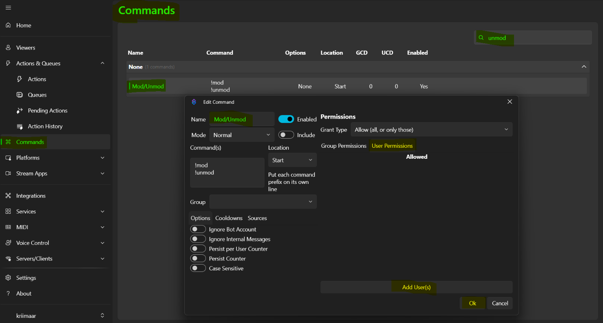
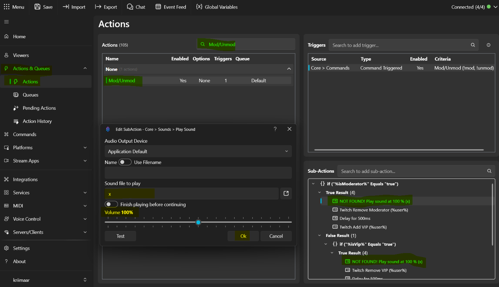

Twitch · Streamer.bot · Moderation
Stream
Moderation.
Moderations-Helfer, die im Hintergrund mitlaufen: ein AdBreak-Hinweis kurz vor der Werbung, manuelle Shoutouts per !so und !so2 sowie ein automatischer Raid-Shoutout mit Cooldown für Multi-Raids. Alle Aktionen laufen über Streamer.bot, Import-Key rein, Commands aktivieren, fertig.
Video-Anleitung
Einrichtung im Video ansehen
Das Video zur Einrichtung folgt hier. Bis dahin führen dich die Abschnitte darunter Schritt für Schritt durch die Einrichtung.
01 / Voraussetzungen
Was vorher vorhanden sein muss
- Streamer.bot muss mit deinem Twitch-Konto verbunden sein. Das Bot-Konto braucht Moderator-Rechte im Channel, für /shoutout und den AdBreak-Hinweis unverzichtbar.
- Die !so- und !so2-Commands sind auf Moderators beschränkt. Lege in Streamer.bot eine passende Gruppe an oder whitelist die User, sonst führt der Command für niemanden aus.
- Diese Seite liefert fünf separate Import-Keys: AdBreak, Manuelle Shoutouts, Raid Shoutout, Mod/Unmod und Abwehrmodus. Du kannst jedes Paket einzeln importieren.
02 / Import
Import-Keys in Streamer.bot einfügen
Alle Pakete landen über Import → Import from Clipboard in Streamer.bot. Pro Funktion ein eigener Key, der zugehörige Abschnitt erklärt jeweils, was zu tun ist.
- Öffne Streamer.bot.
- Klicke oben auf Import.
- Wähle Import from Clipboard.
- Kopiere hier den gewünschten Import-Key und füge ihn in Streamer.bot ein.
- Bestätige den Import.
- Wiederhole das Ganze für die restlichen Pakete, die du nutzen willst.
03 / Abwehrmodus auto
Abwehrmodus automatisch bei Stream Offline
Seinen eigenen Chat im Auge zu behalten ist sinnvoll, aber nicht immer gewollt. Deshalb übernimmt diese Funktion das für dich: Geht der Stream offline, schaltet Streamer.bot sofort den Abwehrmodus (Shield Mode) ein: und deaktiviert ihn beim nächsten Streamstart wieder. Während des Streams bleibt er aus.
Was importiert wird
Zwei Actions, die über die Twitch-Events Stream Online und Stream Offline feuern: Abwehr AN (Offline → Shield Mode an) und Abwehr AUS (Online → Shield Mode aus). Keine Commands, keine Einstellungen: Import, fertig.
Abwehrmodus importieren
Beide Actions sind ab Import aktiv. Du findest sie unter Actions & Queues → Actions.
04 / AdBreak
Der Chat-Hinweis kurz vor der Werbung
Twitch sagt Werbung bis zu zwei Minuten vorher an. Diese Funktion nutzt genau dieses Fenster aus: Eine Minute vor dem Start geht eine Nachricht in den Chat.
So funktioniert die Funktion
- Der „Ad Break“-Trigger feuert automatisch, sobald Twitch eine anstehende Werbepause 1 Minute im Voraus ankündigt.
- Streamer.bot führt die Action aus und sendet die konfigurierte Nachricht über das Bot-Konto.
- Die Vorlaufzeit von einer Minute sitzt im Trigger rechts unter Minutes, Standard: 1.
- Der Trigger feuert beliebig oft, auch bei mehreren Werbepausen im selben Stream.
Nachricht anpassen
- Öffne die importierte AdBreak-Action unter Actions & Queues → Actions.
- Doppelklicke auf die Sub-Action Send Message to Twitch Channel.
- Trage deine eigene Nachricht ins Textfeld ein, Emojis und Twitch-Emotes funktionieren.
- Bestätige mit Ok. Standardtext:
⚠️ Werbung startet in 1 Minute. Holt euch kurz etwas zu trinken.
Konfiguration auf einen Blick
| Einstellung | Auswirkung |
|---|---|
| Vorlaufzeit (Minutes im Trigger) | Standard: 1 Minute. Twitch kündigt bis zu 2 Minuten vorher an, die Action bleibt bereit. |
| Nachrichtentext (Sub-Action) | Standard: „⚠️ Werbung startet in 1 Minute. Holt euch kurz etwas zu trinken.“: frei in der Sub-Action editierbar. |
| Aktiv bei Werbepausen | Der Trigger feuert bei jeder angesetzten Werbepause, auch bei Wiederholungen im selben Stream. |
05 / Clip erstellen
Twitch-Clips per !clip
Mit !clip erstellst du direkt aus dem Chat einen Clip des Streams. Optional legst du Dauer und eigenen Titel fest; ohne Angaben entsteht ein 30-Sekunden-Clip mit dem Titel „Clip“. Die Dauer klemmt die Action automatisch auf 5-60 Sekunden.
Clip-Code anpassen
Beispiele
| Befehl | Dauer | Titel |
|---|---|---|
!clip | 30 | Clip |
!clip 30 | 30 | Clip |
!clip 30 GutClippen | 30 | GutClippen |
!clip 45 cooles Play | 45 | cooles Play |
!clip 3 | 5 | Clip |
!clip 120 | 60 | Clip |
Die Zahlenwerte werden hart geklemmt: unter 5 Sekunden → 5, über 60 Sekunden → 60. Was nicht als Zahl beginnt, landet komplett im Titel. Der C#-Code links setzt die Argumente clipTitle und clipDuration: die anschließende Clip-Aktion hängt sie an Twitch Create Clip.
Clip erstellen importieren
Der Command wird beim Import deaktiviert angelegt: Erst den Import bestätigen und kompilieren, dann unter Commands per Rechtsklick den !clip-Command aktivieren.
06 / Mod/Unmod
Mods im Lurk als aktive Viewer zählen
Mods im Lurk zählen in Streamer.bot nicht als aktive Zuschauer. Diese Funktion löst genau das: Über den Umweg auf den Rang VIP bleibt die Person zählbar, während sie ihre Moderator-Befugnisse abgibt. Ausgewählte Personen holen sich mit !mod die Moderator-Rechte, geben sie mit !unmod wieder ab. Wer das darf, legst du in Streamer.bot per Whitelist fest.
Nutzer whitelisten
- Öffne unter Commands den importierten Mod/Unmod-Command (Bearbeiten).
- Rechts im Fenster liegt der Bereich Permissions.
- Stelle Grant Type auf Allow (all, or only those).
- Wähle User Permissions und klicke dort auf Add User(s).
- Trage die Personen ein und bestätige mit Ok.
- Aktiviere den Command per Rechtsklick und schließe das Fenster mit Ok.

⚠️ Vorsicht wer hier eingetragen wird. Jede eingetragene Person kann sich die Moderator Rechte holen und wieder abgeben.
Sounds festlegen
In der Action selbst gibt es die Möglichkeit bestimmte Sounds festzulegen über .mp3 Files die auf deinem PC liegen.
- Kopiere den Pfad zur Audio-Datei auf deinem PC.
- Öffne im Sub-Actions-Fenster die Play-Sound-Sub-Action und füge den Pfad ins dafür vorgesehene Feld (Sound file to play) ein.
- Passe die Lautstärke des Sounds an und klicke Ok.

Solange kein Pfad gesetzt ist zeigt Streamer.bot NOT FOUND! an: das ist normal und verschwindet mit dem echten Pfad.
Ablauf
| Zustand vorher | Ablauf | Nachher |
|---|---|---|
| Moderator | Sound → Twitch Remove Moderator → Delay 500ms → Twitch Add VIP | VIP |
| VIP | Sound → Twitch Remove VIP → Delay 500ms → Twitch Add Moderator | Moderator |
| Nichts von beiden | Sound → Twitch Add Moderator | Moderator |
Mod/Unmod importieren
Der Command wird beim Import deaktiviert angelegt: Erst die Nutzer/Moderatoren whitelisten, denen du vertraust, dann unter Commands per Rechtsklick den Command aktivieren.
07 / Raid Shoutout
Automatischer Dank bei eingehenden Raids
Wenn ein Raid reinkommt, bedankt sich die Funktion automatisch: /shoutout über das Bot-Konto plus eine Chat-Nachricht mit Name, Zuschauerzahl und aktuellem Spiel. Bei Multi-Raids arbeitet ein 120-Sekunden-Cooldown (Twitch-Limit für /shoutout) sie nacheinander ab.
So sieht der Ablauf aus
- Ein eingehender Raid triggert die Action über den Raid In-Trigger.
- Ein kleines Stück Code liest das aktuelle Spiel des geraideten Kanals und speichert es als gameDisplay-Argument, ohne Spiel: „hat zuletzt nichts gespielt“.
- Der Bot postet die Chat-Nachricht (Standard:
@%userName% raided with %viewers% viewers! 🎉 Last seen playing: %gameDisplay% - Show some love: twitch.tv/%userName%). - Direkt danach kommt der /shoutout über das Bot-Konto.
- Zum Schluss wartet die Action 120.000 Millisekunden (= Twitch-Limit für /shoutout), bevor die Queue den nächsten Raid durchlässt.
Warum Queue statt Überlappung
Die Action läuft in einer eigenen Blocking-Queue namens ShoutoutQueue. Twitch erlaubt /shoutout nur alle 2 Minuten, ohne Queue würden parallele Raids sich gegenseitig stören. So arbeitet die Funktion Raids nacheinander ab: der erste Raid sofort, der nächste etwa zwei Minuten später.
Du willst die Wartezeit verändern? Passe die Wait-Sub-Action ganz unten an. Twitch setzt seine 2 Minuten beim echten /shoutout trotzdem durch, die Queue sorgt nur dafür, dass die Raids ordentlich so lange warten.
Nachricht anpassen
- Öffne die importierte Raid Shoutout-Action.
- Doppelklicke auf die Sub-Action Send Message to Twitch Channel.
- Verfügbare Platzhalter: %userName% (geraider Streamer), %viewers% (Zuschauerzahl), %gameDisplay% (Spiel oder Fallback-Text).
- Bestätige mit Ok. Reihenfolge nicht tauschen: die Nachricht muss vor der /shoutout-Sub-Action sitzen.
Checkliste
- Alle importierten Commands (!so, !so2) sind unter Commands aktiviert.
- Das Bot-Konto hat Moderator-Rechte in deinem Kanal.
- Die Raid Shoutout-Action zeigt den „Raid In“-Trigger und seine Sub-Actions.
- Ein Test-Raid von einem zweiten Account löst /shoutout plus Nachricht aus, der Cooldown hält Dubletten fern.
08 / Set Game
Spiel wechseln per !setgame
Mit !setgame <Spielname> ändern Mods und der Streamer das Spiel des Kanals ganz ohne Umweg über das Dashboard. Die Funktion sucht über die Twitch-API nach passenden Spielen und setzt automatisch den besten Treffer: „Marbles on“ reicht für „Marbles on Stream“, „Elden“ für „Elden Ring“. Exakte Treffer (Groß-/Kleinschreibung egal) haben immer Vorrang.
So funktioniert es
- Ein Mod tippt
!setgame marbles onin den Chat. - Die Action fragt die Twitch-API nach bis zu 5 passenden Spielen ab.
- Exakter Treffer (Groß-/Kleinschreibung egal)? Dann gewinnt er. Sonst: der erste Suchtreffer.
- Das Spiel wird über die Game-ID gesetzt: robust auch bei Namensänderungen.
- Der Bot bestätigt im Chat:
✅ Spiel geändert zu: Marbles on Stream
Fehlerfälle laufen sauber durch: fehlender Twitch-Connect, API-Fehler oder leere Trefferliste antworten mit einer kurzen ❌-Nachricht statt still zu sterben. Der Command läuft in der Gruppe Moderators: nur Streamer und Mods dürfen !setgame verwenden.
Set Game importieren
Der Command wird beim Import deaktiviert angelegt: Erst den Import bestätigen, dann unter Commands per Rechtsklick den !setgame-Command aktivieren, damit Mods ihn im Chat nutzen können.
Nachrichten anpassen
Text der Bot-Antworten hier einstellen und kopieren, dann in die Execute-C#-Sub-Action einfügen und kompilieren.
09 / Set Title
Streamtitel wechseln per !settitle
Mit !settitle <Titel> ändern Streamer und Mods den Streamtitel direkt aus dem Chat: ohne Dashboard, ohne Session-Wechsel. Der Bot bestätigt jeden Wechsel mit dem neuen Titel: ✅ Titel geändert zu: "Heute Elden Ring Boss-Rush!"
So funktioniert es
- Ein Mod tippt
!settitle Chilltag mit Viewer-Gamesin den Chat. - Alles nach !settitle wird (getrimmt) als neuer Titel gesetzt.
- Ohne Text antwortet der Bot mit dem Nutzungshinweis:
❌ Nutzung: !settitle <Stream Titel> - Der Bot bestätigt im Chat mit dem neuen Titel.
Set Title importieren
Der Command wird beim Import deaktiviert angelegt: Erst den Import bestätigen, dann unter Commands per Rechtsklick den !settitle-Command aktivieren.
Nachrichten anpassen
Text der Bot-Antworten hier einstellen und kopieren, dann in die Execute-C#-Sub-Action einfügen und kompilieren.
10 / Manuelle Shoutouts
!so und !so2 aus dem Chat
Zwei Commands für deine Mods: !so liefert den Shoutout inklusive der Twitch-shoutout-Funktion, !so2 nur die Chat-Nachricht ohne /shoutout: praktisch wenn der Kanal gerade schon durch einen Raid im Fokus steht.
Command-Verhalten
| Command | Chat-Nachricht | /shoutout | Cooldown |
|---|---|---|---|
| !so | Ja | Ja | 120 s global |
| !so2 | Ja | Nein | Kein globaler |
Beide Commands sind auf die Gruppe Moderators beschränkt und werden beim Import deaktiviert angelegt: aktiviere sie nach dem Import per Rechtsklick unter Commands, damit deine Mods sie nutzen können.
Ablauf
- Ein Mod schreibt
!so streamernameoder!so2 streamernamein den Chat. - Die Action zieht den Namen aus dem Input als Shoutout-Ziel (targetUser).
- !so: zusätzlich die Twitch-/shoutout-Funktion (Twitch-Limit: 2 Minuten zwischen Shoutouts).
- Je nach Variante postet der Bot die Shoutout-Nachricht mit dem aktuellen Spiel des Kanals.
- Standardtext:
🎉 @%targetUser%, make sure to check them out! Last seen playing: %game% | Show some love: https://twitch.tv/%targetUser%
Shoutout-Nachricht anpassen
- Öffne die importierte Action Manueller Shoutout oder Manueller Shoutout 2.
- Doppelklicke auf die Sub-Action Send Message to Twitch Channel.
- Ändere den Text, die Platzhalter %targetUser% (Name) und %game% (aktuelles Spiel des geshouteten Kanals) kannst du beliebig setzen.
- Bestätige mit Ok. Beide Actions teilen sich denselben Aufbau, nur der jeweilige Sub-Action-Text ist unabhängig.
11 / Abschluss
Kontrolle vor dem ersten Live-Test
Checkliste
- Alle Import-Keys sind drin, die zugehörigen Commands (!so, !so2, !mod, !unmod, !setgame, !settitle, !clip) sind unter Commands aktiviert: Mod/Unmod erst nach dem Whitelisting.
- Das Bot-Konto hat Moderator-Rechte in deinem Kanal und Streamer.bot zeigt oben rechts Connected.
- Vor der aktiven Nutzung im Stream die eingebauten Commands im Chat testen, beginnend mit einem Test-Account.
- Abwehrmodus: Stream offline/online schalten testet Abwehr AN und Abwehr AUS automatisch.
Typische Probleme
- Shoutout kommt nicht? Prüfe die Moderators-Gruppe und ob der Command (Rechtsklick) enabled ist.
- Mod/Unmod macht nichts? Die gewünschte Person muss in der Command-Whitelist stehen, der Command muss enabled sein und die in der Whitelist enthaltenen Streams-Aktionen müssen mit der grünen Clip-Verbindung verbunden sein.
- NOT FOUND! bei Play Sound? Der MP3-Pfad fehlt noch oder zeigt auf eine Datei, die nicht existiert.
Feedback & Support
Fehler gefunden oder eine Action vermisst?
Melde dich im Discord oder lege ein GitHub Issue an. Beides hilft, die Sammlung laufend zu verbessern.